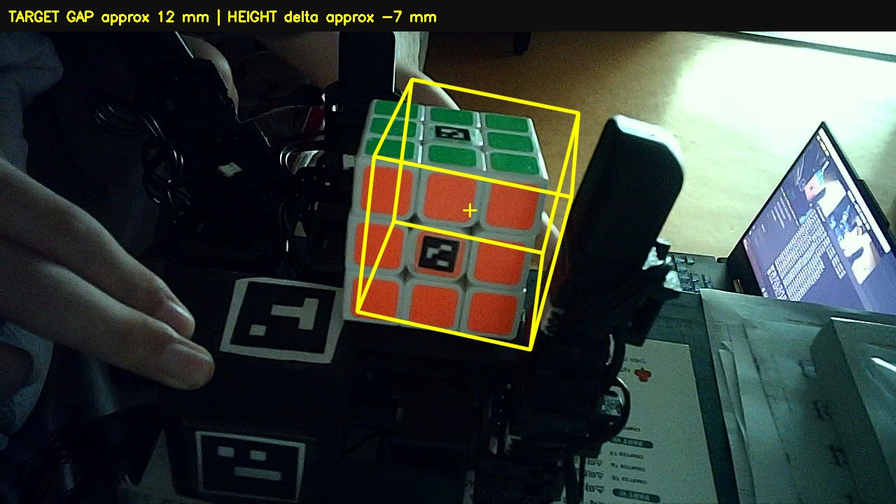
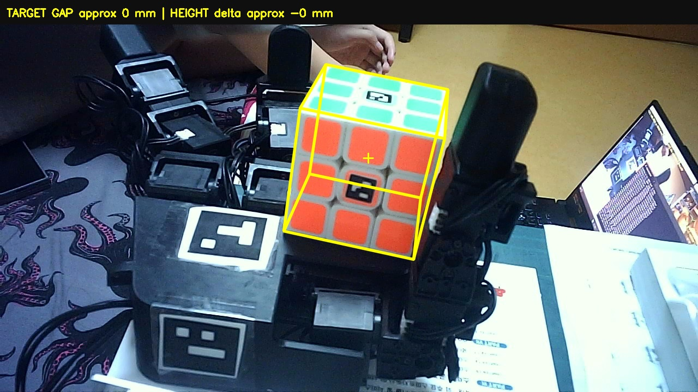

방금 촬영은 정상 완료됐고 큐브 제거, 토크 OFF와 설정 복구도 확인했다. 준비 자세 지령은 이전 기준과 같았다.
초록 면과 주황 면의 격자를 함께 비교하면 이번 큐브 중심은 이전에 돌았던 배치와 약 12mm 차이가 나고, 손바닥 마커 기준으로 약 7mm 낮게 앉은 것으로 추정된다. 카메라의 절대 거리 정확도를 검증한 수치는 아니다.
노란 선은 이전 큐브 배치를 현재 카메라 시점으로 옮긴 안내다. 실제 큐브 모서리를 이 선에 가깝게 맞춰보면 된다. 손가락을 미리 바꿀 필요는 없다.
다음 한 번 실행
& "C:\Users\김준서\Documents\Codex\2026-09-23\files-mentioned-by-the-user-leap\outputs\leap_placement_alignment.cmd"
- 큐브는 손과 카메라 화면 밖에 두고 터미널에서 첫 SPACE. 현재 자세를 검사한 뒤 빈손 준비 자세로 움직인다. 준비 동작은 약 44초이며, 사전 모델 검사 시간이 추가될 수 있다.
- PLACE CUBE가 나오면 초록 위, 주황 면은 손목 ID41 쪽으로 놓는다. 왼쪽 화면의 노란 큐브 윤곽에 모서리를 맞춰본다. TARGET GAP은 예시와의 대략적인 거리이며 작을수록 가깝다. 힘으로 밀거나 공중에서 계속 받치지 않는다.
- 자연스럽게 놓인 뒤 손을 빼고 터미널에서 두 번째 SPACE. 사진만 저장한다. 이 단계에서 잡기와 회전은 수행하지 않는다.
- 큐브를 빼고 세 번째 SPACE. 토크 OFF와 설정 복구 후 끝난다. 큐브를 놓아둘 수 없으면 Q로 종료하면 된다.
손바닥 ID40이 보여야 노란 윤곽이 나온다. 가려지면 화면 오른쪽 예시를 보고 사진만 저장해도 된다. 마커가 가려졌다는 이유로 새 중단 조건을 추가하지 않았다.
끝나면 “했어”만 알려주면 된다. 사진과 관절값은 자동으로 저장된다.
방금 사진에서 본 차이

노란 선은 목표 큐브의 여덟 꼭짓점과 열두 모서리다. 뒤쪽 가려진 모서리도 선으로 표시되므로, 초록 윗면과 주황 면의 바깥 모서리를 기준으로 비교한다.
이전에 돌았던 배치에 겹친 모습

이전 실행에서는 주황 앞면이 흰 면으로 바뀌는 회전이 관찰됐다. 정확한 실물 90도 인증을 뜻하지 않는다.